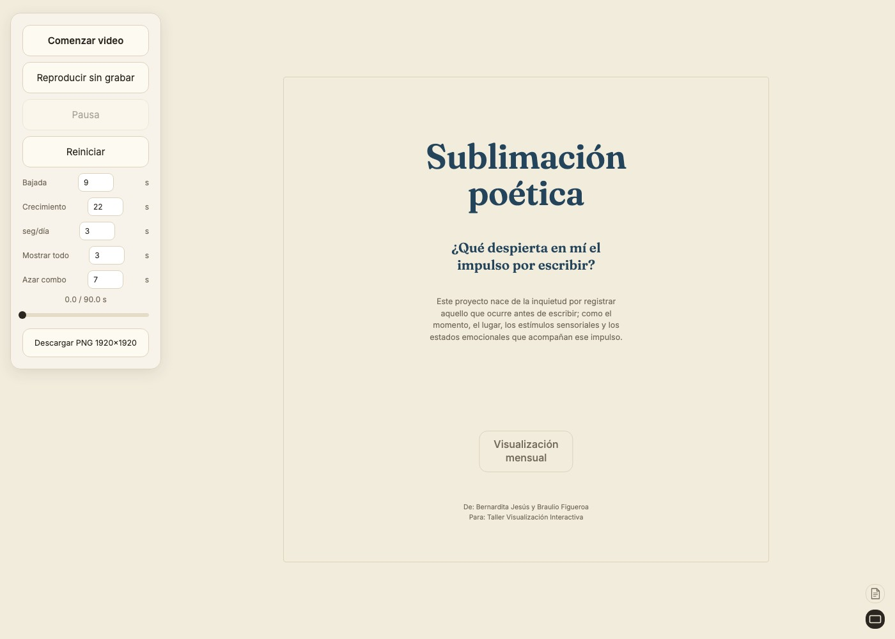

← Volver a proyectos
Web Sublimación poética
Web · Visualización de datos · 2026Este proyecto nace de la inquietud por registrar aquello que ocurre antes de escribir: el momento, el lugar, los estímulos sensoriales y los estados emocionales que acompañan ese impulso. Es un trabajo realizado junto a Braulio Figueroa para el Taller de Visualización Interactiva.
